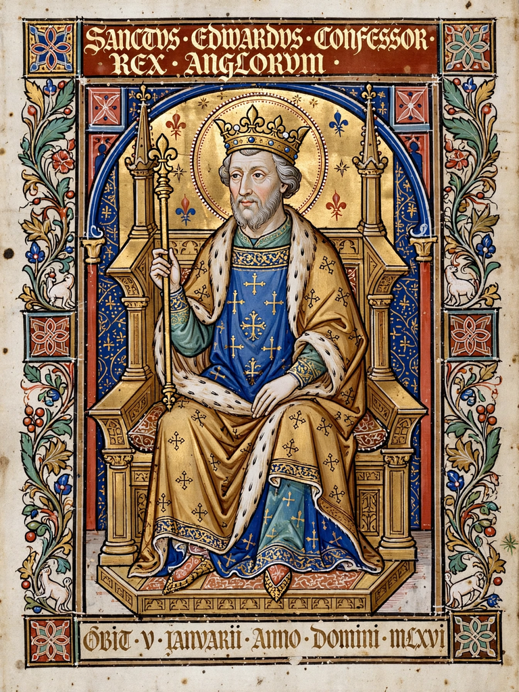

| Edward the Confessor | |
|---|---|
| Reign | 8 June 1042 – 5 January 1066 |
| Coronation | 3 April 1043, Winchester Cathedral |
| Predecessor | Harthacnut |
| Successor | Harold Godwinson |
| Born | c. 1003–1005, Islip, Oxfordshire |
| Died | 5 January 1066, London |
| Burial | Westminster Abbey |
| Spouse | Edith of Wessex |
| Father | Æthelred the Unready |
| Mother | Emma of Normandy |
| Canonised | 1161, by Pope Alexander III |

Edward the Confessor (c. 1003 – 5 January 1066) was an Anglo-Saxon king of England, reigning from 1042 until his death. The son of Æthelred the Unready and Emma of Normandy, he spent much of his early life in exile in Normandy during the Danish conquest of England. Restored to the throne after the death of Harthacnut, Edward presided over a long and largely peaceful reign marked by the growing power of the great earls — above all the Godwin family — and by his own reputation for piety. He rebuilt St Peter's Abbey at Westminster, whose consecration days before his death gave Westminster Abbey to posterity. Childless at his death, his disputed succession precipitated the Norman Conquest of 1066. He was canonised in 1161 and was long regarded as England's patron saint.
Edward was born at Islip, Oxfordshire, between 1003 and 1005. When the Danish king Sweyn Forkbeard conquered England in 1013, Emma fled to Normandy with Edward and his brother Alfred; the family returned briefly in 1014, but after the conquest of Cnut in 1016 the brothers remained in exile at the Norman court of their uncle, Duke Richard II. Edward grew up thoroughly Norman in upbringing. In 1036 Alfred returned to England and was captured and blinded, dying of his wounds — a crime later blamed on Earl Godwin. Edward himself made an unsuccessful descent on Southampton the same year. After Cnut's death, Edward's half-brother Harthacnut became king in 1040 and summoned Edward back to England as his heir; when Harthacnut died suddenly at a wedding feast in June 1042, Edward was acclaimed king.
Edward was crowned at Winchester on Easter Day, 3 April 1043. In 1045 he married Edith, daughter of Earl Godwin of Wessex, but the marriage produced no children — later tradition claimed Edward had taken a vow of chastity, though historians treat this as hagiography. The great question of the reign was the balance of power between the king and the earls: Godwin dominated Wessex, Leofric held Mercia, and Siward Northumbria. In 1051 a confrontation over a brawl at Dover led Edward to exile the Godwins, but in 1052 Godwin and his sons returned with a fleet and forced the king to restore them — a humiliation that exposed the limits of royal power. After Godwin's death in 1053, his son Harold Godwinson became the kingdom's leading magnate and an effective military deputy, campaigning successfully in Wales.
Edward's posthumous epithet "the Confessor" denotes a saint who lived a holy life without martyrdom. His great project was the rebuilding of St Peter's Abbey at Westminster in the new Romanesque style — the first major Norman-style church in England — consecrated on 28 December 1065, when Edward was too ill to attend. He died on 5 January 1066 and was buried in the abbey the following day, the same day Harold Godwinson was crowned.
Edward's childlessness made the succession the consuming problem of his last years. Claims advanced in 1066 included Harold Godwinson, who said the king had promised him the throne on his deathbed; William, Duke of Normandy, who maintained Edward had designated him in 1051 and that Harold had sworn to support him; Edgar Ætheling, Edward's great-nephew and the last male of the royal line; and Harald Hardrada of Norway. The resulting invasions ended with William's victory at the Battle of Hastings on 14 October 1066.
A Vita Ædwardi Regis was composed within a few years of his death, and miracles were reported at his tomb. After an initial refusal, Pope Alexander III canonised Edward in 1161; his remains were translated to a new shrine in Westminster Abbey by Henry II in 1163, and again by Henry III in 1269 to the shrine that survives today. Edward remained England's patron saint until St George displaced him in the later Middle Ages. The coronation regalia of English monarchs, centred on St Edward's Crown and the anointing spoon, are traditionally associated with him.